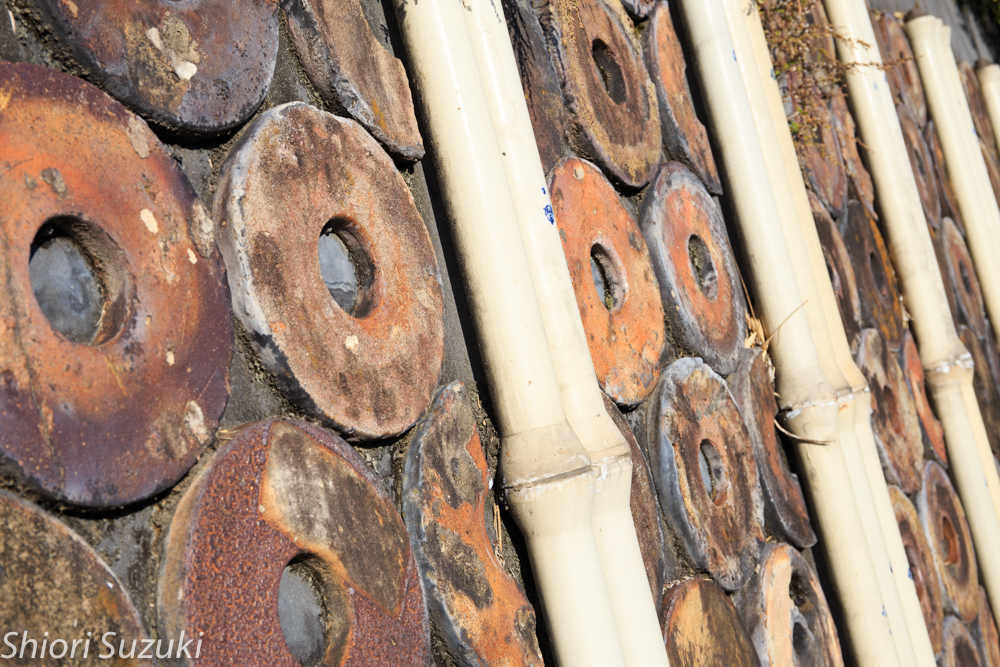
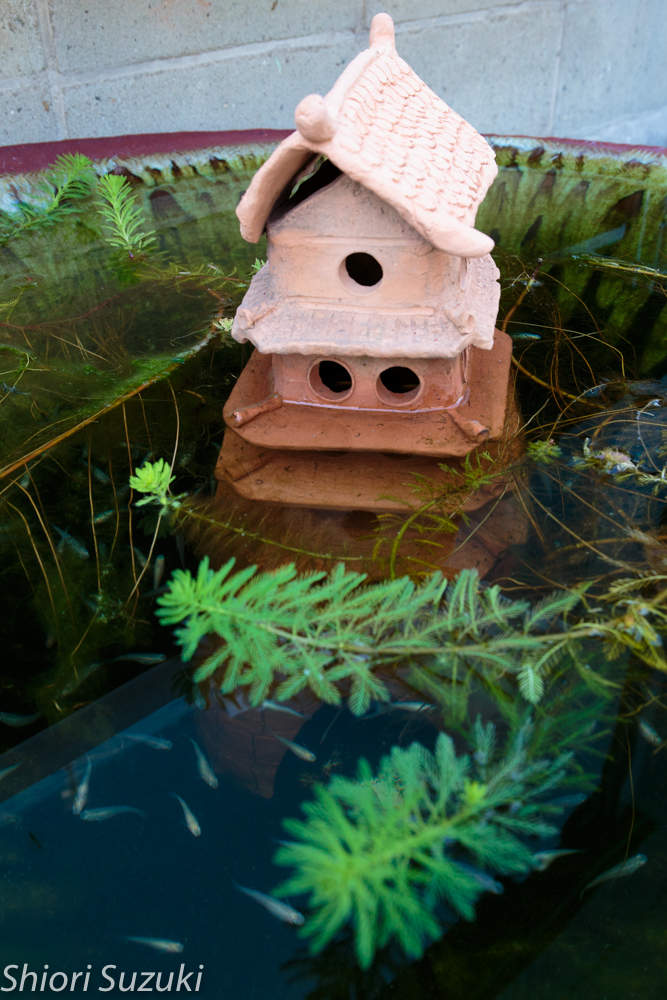
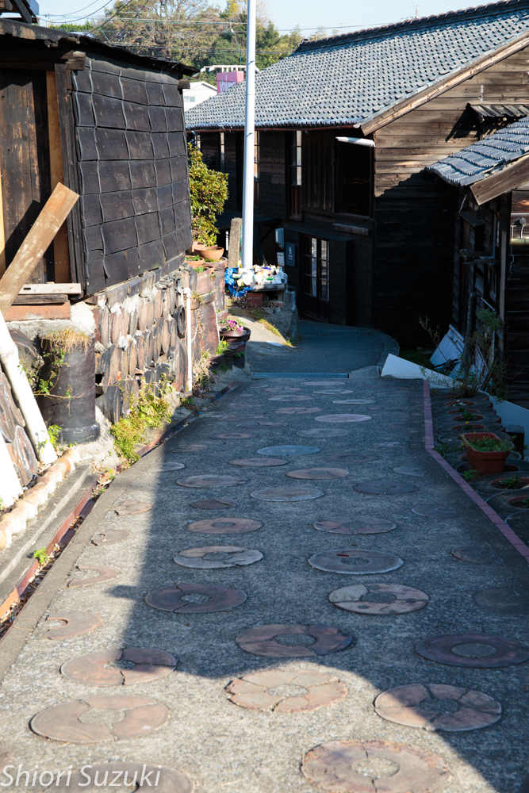

| Chocolate vol.22 | |
| 鈴木詩織 | |
| (2018) | |
Chocolate vol.22
201 9年1月1 日
1 1 月は私のやりたいことリストに載っていたことをいくつか消化しました。
・ 数年前に出会った東京で女優として活動している友人が、出演している舞台を観に行く
・ 子供の頃に使っていた教科書でおなじみの、鎌倉の大仏を見る
・ 数年前にお会いしてから応援していたモデルでありピアニストの方が、名古屋で開催している演奏会にいく
・ 一時期仕事で頻繁に使っていた名鉄常滑線から見える、知る人ぞ知る大仏の正体を突き止める
・ 数年前から一度やってみたかった、常滑観光
月の頭 に 3 9 度の熱と咳が出る風邪をひき、スケジュールもパンパン。それでもなんとか、リストに載っていたこ の5 つを消化しました。
消化して満足......ではあります。
でも、消化するまでに少し時間がかかり過ぎていた感じが否めない。数年前からリストに載っていたものが多すぎます。
しかもよくよく見ると、消化するのがそこまで難しいものでもない。
愛知に住んでいる私にとって東京は新幹線ですぐに行ける場所だし実際仕事ではちょくちょく行っています。
女優の友人の舞台だって今まで の2 年の間で、行こうと思えば行けたタイミングはあったはずです。
行ってみたら鎌倉は東京からそこまで遠い場所でもなく。日常でふらっと行くのは難しくても観光地としてなら気軽に行ける範囲だと感じました。
モデル・ピアニストの方の演奏会が開催されていたのは名古屋。名古屋は自宅か ら1 時間で行ける場所だし、そもそも私 は 201 6 年春か ら 201 7 年夏まで名古屋市内に住んでおり、その間も彼女は演奏会を開催していました。にもかかわらず私は行きませんでした。
名鉄常滑線から見える大仏に至っては、行ってみたら「なぜ私は今の今までここに来なかったのだ！」と自分をぶん殴りたくなるくらい簡単に行ける場所で。
【常滑線から見える大仏】
【近くで見た大仏】
私 は 201 6 年か ら 201 8 年半ばまで、月の半分くらい名鉄常滑線を使うことがありました。使うたびに「あの大仏なんだろう」と思ってきました。
常滑線を使用する度に、電車の中からその大仏を眺め「なんだろう。近くで見てみたい」と思い続ける日々を過ごしていたことになります。
二年近くもの間。
これは由々しきことです。仕事の帰りにちょっと途中下車してみたら見られたものを、私は二年近くもの間面倒くささのためにやりませんでした。
常滑観光も然り。常滑は興味のある街であり、一度雰囲気を楽しみたいと思っていたし、別に遠いわけでもなくちょっと足を伸ばせば行ける場所です。頭では分かっていることでした。それなのにこ の 1 1 月になるまで実行しませんでした。
【常滑の街並み】

【私も地上にこんな家を建てたい】

【常滑の街並み】

今回機会に恵まれて常滑線の大仏・常滑観光を一緒に消化しましたが、少し時間がかかりすぎです。どれもやろうと思えばすぐにやれたことばかり。これはやっぱりよくない。
消化したことですっきりはしたものの、己の腰の重さを反省しました。
「こんなことができるなんてすごい。私にはできないもん！」
なんてことを言われたことがある人もいるでしょうし、言ったことがある人もいるでしょう。ちなみに私も両方経験があります。
私がそれを言う時はもちろん相手への尊敬の気持ちを抱いています。「自分にはできないことを成すこの人はすごい」。相手を敬い、自分よりも上の存在と認識しています。
逆に言われた時は「まぁ仕事ですから」とか「それなりに時間と労力をかけてきたし」と言ったり思ったり。もちろん褒められて悪い気はしません。感謝もします。でも、割と「できて当たり前」という感じ。
「私にはできないことができるなんてすごい」と言う方も言われる方も、その時の気持ちは私と似たり寄ったりではないでしょうか。言う時は敬意を抱くし、言われた時は悪い気はしなくても「当たり前」。
そう、言われる側としてはどんなに褒められて、言われることに感謝していても「当たり前のこと」でしかないんです。
「すごい」と言われる人はそれだけの時間と労力をかけてそれをやっている。
それだけそれを成すことの方向を向いて集中している。
後ろを向いている人間は、前から飛んでくるものに気づきません。前を向いているから前から飛んでくるものに気づける。
「成す」ことに集中しその方向を向いている人は、成すためのアイディアが飛んできた時に気づいてキャッチできる。しかし「成す」ための方向を向いていない凡人はどんなにいいアイディアが近くに落ちていても気づかない。
だから何かを成した人は、成すべくして成したと言えます。それだけ「成す」ことを考え、そっちの方向を見つめ、集中し、時間と労力をかけてきた。だからそっちに進み続けるためのアイディアが閃いた時にはそれを上手にキャッチできた。それを繰り返して能力を高めてきた。
アイディアは、閃く人にとっては閃くべくして閃き、
能力はつくべくしてつく。
だから「こんなことができるなんてすごい」と言ったところで「当たり前」としか思わないし思われないんです。アイディアが閃き、能力がある人はそれだけその方向を見続けていたのだから。
褒めることは間違っていないし、それが相手にとって励みにもなるかもしれないから、私はこれからもすごい人を見たら素直に「すごい」と褒めていきます。でも頭の中では「この人にとってはそれが当たり前なんだ」とも理解している。
彼にとって当たり前のことができないから、彼ほどそれを成す方向を集中して向いていないから、私はその世界では凡人であり時には愚者なんです。
今私はフリーランスとして働いています。作家の仕事も、所属しているモデル事務所も、ライターの仕事も、全部契約上では「個人事業主」という扱い。
自分に向いている仕事だと思っているし、この働き方は気に入ってます。
規則正しく、こつこつと物事に取り組むのが得意な私には向いているのかもしれません。
最近ライターの仕事の報酬が上がりました 。2 ヶ月前に「報酬をあげよう」と動き始めたからです。
動き始めたらあっさり上がりました。
単価が上がったことには素直に喜んでいます。夫ともハイタッチをしたりして。
だがしかし！
「いったい今まで何をやっていたんだ！」
一年前の自分をぶん殴りたい気持ちにもなります。これは一年前の私にもできたはずのことだから。
つくづく「私って社畜だな」と感じてしまいました。
それも一般的に自虐で使われているような「社畜」ってレベルの話ではありません。だいたい自虐で言う「社畜」は大して深い意味はない。
まさに会社に飼育されている家畜のような「社畜」。そこでしか生きていけないと自分を決めつけ、自ら鎖に繋がれる。この域の社畜になると、自分が社畜であることも気づかないでしょう。
社畜になればなるほど、組織に貢献できなくなり、同時に大切にされず、切られるときはあっさり切られる。......あるいはいつの間にか消えていく。
私の夫は会社員です。でも見ていて「頭を使って」器用に働いていることが分かります。
対する妻の私はフリーランス。
嫌なことがあった時は落ち込むけれど、それでも粘り強く頑張れる。こつこつと目の前の仕事をこなし、積み重ねる。
これは一つの天から与えられた才能だと思っています。
しかし天から与えられた才能は時に諸刃の剣である。
粘り強くて真面目にこつこつやるあまり、思考停止してしまう。目の前の仕事しか見えてこなくなる。
「この仕事をひたすら頑張っていけば、お金がいっぱい稼げる。スキルも上がる」
そんな固定観念にガッチガチに縛られてしまう。
だから周りから見ると「やたら頑張ってはいるけれど、成果が出ない人」になってしまう。
思考停止はいつしか「ここでしか生きられない」に変わります。
つまり私は粘り強く一点集中してしまうがあまり、社畜になってしまう。
下手をするとフリーランスの私にとっては命取りになりかねない性質。
ふと我に返って「他のことをやってみよう」と思いつくだけまだマシですが、それに時間がかかってしまうのもまた厄介な点です。
「あなたの短所は見方を変えれば長所にもなる」という言葉はよくあります。
一方で、私がフリーランスでありながら社畜であることは、長所も時と場合によっては短所になることの例でしょう。
天からの与えられたこの才能も、使い方次第のようです。
今の自分の生活を構成している要素を上げれば、どっからどう見ても「私は恵まれた幸せ者」としか思えません。結婚生活は充実しているし、仕事も大好きだし。
まだまだ果たしたい目標はあるけれど、今の状態を「不幸だ。私は恵まれていない」なんて言ったらバチが当たります。
こういう「幸せオーラ」って目の前の人に伝わるんですよね。かつて「不幸オーラ」を放ちまくっていた私はそのことをよく理解しています。
だから最近目の前の人に「詩織さんって幸せそうでエネルギッシュ」なんて言ってもらえます。
昔の「不幸オーラ」を放ちまくっていた私を知る人からは「今の詩織ちゃんあの時よりもずっときれいになった」なんてことまで言われてしまう。
今それくらい私は幸せです。
......が......！......
やっぱり私は卑屈なところがある。
今でこそそんな卑屈な自分も好きだし、その卑屈さから作品のアイディアがひらめいたり、卑屈さをバネにして、いろんなものを手に入れてきたと思っていますが、やっぱり私は卑屈だ。
この卑屈さによって得てきたものはたくさんあります。だから私はこの性質を抑えつけよう・やめよう・曲げようなんて思ってはいません。
だがしかし、時にこの卑屈さが私の足を引っ張っているのも事実。
「詩織さんってエネルギッシュな人ですね。今すごく幸せそうなのが伝わります」
なんて褒めてもらうと、
「自慢になっちゃうけど、やっぱり私幸せなんです」
と答えてしまう。
最近友達ともそんなやりとりをしてしまいました。彼女からご指摘いただいたこと。
「その前置きいらない」
それを言われてハッとしました。
私は相手との関係を壊したくなくて、もっと言うと相手に嫌われて自分が傷つけられるのを恐れて「自慢になるけど」なんて前置きをしました。
「人に嫌われたくない」も卑屈の表れです。そしてこの手の卑屈は当然それを発している人間自身が幸せになることを阻みます。
その方はさらに続けました。
「もっと素直に『私今幸せ』って言いなよ」
素直に幸せであることをためらう卑屈さ。自分自身の足を引っ張る卑屈さ。私にもまだまだありました。
確かに私は自分の卑屈さからいろんなものを得てきました。そんな自分も好きではあります。
でも、自分の幸せを否定してしまうような卑屈さはやっぱりいらない。そんな卑屈さは幸せを遠ざける。
そんな卑屈さは私の前進を阻む。
人から「幸せオーラが伝わる」と言ってもらえるくらいまで、堂々と幸せを感じられるようになりました。
あと一歩、変な前置きで自分を守るようなことをせず、自分の幸せを素直に表現できるようにならなければ。
1 5 年くらい前のダイエット業界の主力キーワードは「カロリーオフ」でした。ダイエットで結果を出すためには、いか に1 回の食事のカロリーを減らすかを考えなければならない......それが当たり前でした。
ダイエット本や健康専門雑誌、食品メーカー、フィットネスクラブ......あらゆるところで「ダイエットではカロリーオフの食事が大事」と言われてきました。
しかし最近ではその主力キーワードは変化しつつあります。「カロリーオフ」は以前ほど聞かなくなりました。
「糖質オフ」。炭水化物や砂糖などをいかに減らすかがダイエットの上では重要だ。ダイエットだけでなく、健康を維持するためには糖質を制限した食事が重要だ。
最近の健康・ダイエット業界ではそれが当たり前になっています。
もちろんそれは研究が進んだ結果だし、間違ったことを言っているわけではないのでしょう。
私もミスコンのトレーニングの中で「糖質オフ」と何度も言われてきたし、それを信じてきました（私の体質だと「糖質オフ」ではあまりきれいになれないらしいですが）。
でも、最近出会った人がこんなことを言っていました。彼女は職業柄お金に関する知識も見識も豊富な人です。
【ダイエット・健康市場もどんどん変わっていかないといけないから、次々に流行を打ち出していかないといけない。『カロリーオフ』が最近になって『糖質オフ』にとって代わられたのは、市場が成長し続けるために必要だったから】
「もちろんそれらの流行が嘘を言っているわけではない」という前提のもと。
よくよく考えてみると「今年の秋のパリコレでは〇〇が流行」ってセリフもおかしなものです。明らかにファッションブランド企業の戦略を感じる。
経済市場が成長するために「流行」は必要になってきます。
成長し続けるためには常に「流行」を生み出していかないと。
ダイエット・健康市場だって同じです。常に新しい「流行キーワード」を作っていかないと、市場が成長しない。会社が存続しない。
次々と流行を生み出し、市場に流れている空気を意図的に変えている人が、この世には確実に存在します。市場の中で生き残るために。
重ねて言いますが、「糖質オフ」がダイエット・健康に効果があるのは嘘ではなく本当だと私も思っています。
ただ、視点を変えて経済市場・会社経営から見てみると、それは生き残るために作られた「流行キーワード」でもあることを先日お会いした方から教えられました。
誰にでも無意識にやっていることってあるはずです。「無意識のくせ」みたいなものが。
でも、よくよく考えてみるとおかしなものです。
「なんか無意識でこれやっちゃうんだよね」
言ってる時点で、それをやっている自分を意識している。認識している。少なくとも「無意識に......」と言っている時点では、やってる自分を「意識」している。
実際にその行動をとった時点では気づいていないかもしれないけれど、気づいているということは、完全な「無意識」とも言えないのではないでしょうか。
無意識って人を乗せて走る車みたいなものです。向いている方向に乗せている人を連れて行きます。人の人生は無意識の向く方向に進んでいくということ。
意識的に方向を決めていかないと、無意識はそっちに進み続けます。
明るい方向に進んでいけばいいけれど、もちろんネガティブな方向にどんどん突き進んでいくこともあって。悪い方に突き進む「無意識の車」に乗っている人は、当然不幸になります。
だから人は意識的に「無意識の車」を操作していかなければなりません。幸せに、豊かになりたいのであれば尚更です。無意識の車が悪い方向に進んでいることを意識したら、ハンドルを切って方向を変えていかないと。
意識すればいくらでも無意識は変えられます。
そして「無意識にやってしまう」は、大抵の場合ネガティブな行為につく枕詞です。だからこの枕詞を使った時点で、本人はある程度「無意識の車」が向いている方向を認識しています。このまま放っておけば自分の人生がどこに向かっていくのかが、本人に分かっているのです。
この「無意識にやっていること」は、果たして自分を明るい方に連れて行くのか。はたまた暗い方に連れて行くのか。
それが分かるということは、これから先に進む方向をいくらでも変えられる可能性があるということ。
無意識にやっていることをそこまで意識しているのであれば、対策ができるようになります。放っておけば暗い方向に突き進む車のハンドルを切って、別の道を選んで進むことができます。
その先には、もっといい未来が待っているかもしれません。
もちろん明るい方向に進んでいると確信が持てるのであれば、そのままその方向に進んでいけばいい。
下手をすると「無意識にやっている」は言い訳になってしまいます。けれどもそう言った瞬間に対策をとることを考えれば、逆に人生を豊かにするきっかけにできるでしょう。
「無意識にやってしまう」
このセリフには人生をよりよくするためのヒントがたくさん隠されています。
初めてのギャンブルは当たりやすいものだと私は思っています。決してビギナーズラックは迷信ではない。
【初めてギャンブルに挑戦した。初めてだから賭けた金額は小銭程度。それでもビギナーズラックに恵まれたから、その賭けには勝った。以降その快感を求めて、ギャンブルにハマっていった......。】
みたいな話があるようなないような。
まず、本物のギャンブラーは勝つための勝負をします。負けるような勝負はしない。素人には想像できないものですが、ギャンブルはとても理論的な勝負です。......私も素人だけど。
ギャンブラーが勝負に出るときには、理論に基づいた作戦があり、勝算があります。だから勝ちます。
よく「ギャンブル依存症」という言葉も耳にしますが、あれは本物のギャンブラーではありません。ただ一喜一憂する感情の波にハマっているだけ。
パチプロ曰く「本当にパチンコで勝ってるのは、パチンコやってる人 の1 割程度」とのこと。
彼女に出会ったとき、「今月生活費がカツカツだから、これからパチンコ行って稼いでくる」と言っていました。そして本当に生活費を稼いできました。私が度肝を抜かれたのは言うまでもないでしょう。
本物のギャンブラーはそういうものです。
......で、人はどういう時に「初めてのギャンブル」をするかと言うと。
初めてのギャンブルには、必ず何らかのきっかけがあります。それも結構大きく背中を押されるようなきっかけが。ましてやネガティブなイメージもあるギャンブルの世界です。軽いノリではあっても、それなりの勢いがなければできません。
そんな勢いのあるきっかけになるのは、本物のギャンブラーとの出会いであることが、実は多いのではないでしょうか。
【「初めてのギャンブル」に踏み切る人の背後には、結構な確率で本物のギャンブラーがいる。】
私はそう推測しています。
人との出会いが、未知の世界と接点を持つきっかけになることは珍しくなく。ギャンブルも然り。
ギャンブル初心者は、偶然にも本物のギャンブラーと出会ってその世界を垣間見ます。
......
「ここに賭けたら当たるよ」
ギャンブラーは初心者の耳元で囁く。初心者は自分が無知であるがために言われた通りにする。......でも「初めてだから」と言って、賭ける金額は少額。
そして当たる。
ギャンブルの、理論に基づいた勝利を知らない初心者は「初めてのギャンブルで勝った！」と大喜びをする。
......
その道で生きている人間の、理論的なアドバイスを鵜呑みにして賭けるのだから、当たる確率も高まります。初心者が何も考えずにやるよりも当たります。
だから「ビギナーズラック」という言葉が生まれたのでしょう。
ちなみに以前私は競艇をやったことがあります。もちろん「人生経験としてちょっとやってみよう」というノリ。
その場には「競艇のプロ」がいました。競艇を知り尽くし、競艇で勝つための理論も習得している人。
その人のアドバイス通りに私は賭けました。初めてなの で 20 0 円。競艇 は 10 0 円から賭けられるので、ちょっとだけ大胆に。
......負けました。
ギャンブルのプロにアドバイスしてもらいながらも、ビギナーズラックに恵まれない私は、本当にギャンブルに弱いのだと思いました。
それ以来ギャンブルはやっていません。
事前に負けると分かっている勝負はもちろんあります。そういう勝負をしなければならない時も。
けれども例え判定上では負けると分かっていても、勝負をする人は必ずそこから何かを得るつもりでいます。
「ただでは転ばない」
負けると分かっていても、勝負に出る以上、そこには必ず目的があります。
勝負に出る時、人は必ずと言っていいほど獲物を定めます。勝負の上では、客観的な勝敗だけでなく、実はその獲物を捕ることの方が重要であることは珍しくありません。
人は目的があって、欲しいものがあって、勝負に出るものです。
勝負の舞台に立つ時、必ずと言っていいほど人の頭の中には目的があります。人はその目的を果たすために、今勝負をしようと挑んでいる。
そうやって目的を頭の中に思い浮かべて勝負をするのだから、真の敗者になるつもりはありません。目的を果たし、真に勝利することを考えています。
これが勝負に出る人です。
だから人は勝負に出る時、本当の意味で負けることなんて考えていません。判定上負ける可能性があるとは思っているけれど、そこには必ず「勝負の目的」があります。
何かが欲しくて人は勝負の舞台にいる。
だから勝負に出る時点で、その人は本当の意味での勝利を頭の中に思い浮かべています。それを勝ち取ることだけを考えている。
本当の意味で負けることを考えて勝負に出ている人はいません。どんなに不利な状況でも、必ず目的があり、それを果たすために人は勝負をします。
「どうせダメだろうけどやる」
口ではそう言う人もいます。けれどもそれは負けた時の恥を軽減するための保険のセリフです。彼にも目的があり、それを果たすためにこれから勝負しようとしています。
正確に言うと、彼は「やらないよりもやった方がマシ」と思っています。だから勝負に出るんです。「やった方がマシ」のセリフに込められた目的を果たすために。
判定上の勝敗に対しては、彼は自信がないのかもしれません。自分が周囲から「敗者」と見なされることを恐れています。
けれども、勝負に出る以上彼には目的があります。その目的を果たすために彼はその舞台にいるのです。そして目的を果たしたことに気づいた時、彼は自分のことを「勝者」と認められます。そこに周囲の評価は関係ありません。
意味のない勝負なんか、人はしません。勝負に出る時点で、人は何かを勝ち取るつもりでいます。
勝敗の判定では負けたけれど、目的は果たせた。これは一種の勝利です。極めて主観的なものではあるけれど、価値がないとは言えない。むしろ長い人生の中では、客観的な勝利よりも、こうした主観的な勝利の方が重要になってきます。
容姿に関しては人よりも褒めてもらえることが多かったとは思っています。
けれども褒められるたびに「自分はそんな賞賛の言葉がふさわしい人間ではない」と悩んでいました。
それ が 201 6 年ごろの私です今年発売した『ミスコン体験記』などには、周囲からの賞賛の言葉と自分の未熟さに葛藤していたことも書きました。
こうして人から褒めてもらえる、賞賛の言葉がもらえることは、もちろんありがたいことだとは思っていました。周りの人からも「これだけ褒めてもらえるんだから、素直に喜びなよ」なんてことも言われました。けれども私は苦しくて仕方がありませんでした。
その理由の一つは、それらの賞賛があくまでも私が挑戦してきたミスコンなどの事柄の中では、そういう褒め言葉が場違いではないものだっただけだということでした。ミスコンに出場している人の容姿を褒めるって、別におかしなことでもなく。
今あの時かけられていた賞賛の言葉を思い出しても、本当の意味で私自身が賞賛されていたとは思っていません。
たくさんの褒め言葉らしきものをもらってはきましたが、それらはあくまでも私の後ろにあるものに対してであり、私自身に対するものではありませんでした。
いろいろなことに挑戦していく中で、「いつかは後ろのものではなく、私自身のことを見てもらえる」と信じて発信してきましたが、それでもなかなか私自身のことを見てもらえることはなくて。虚しかったり、悔しかったり、惨めだったり。そんな気持ちで苦しくなることはたくさんありました。
自分の背後にあるものが、私を通して褒められる。それらの賞賛の言葉は私を通過していくだけ。それは本当に苦しかった。
そして二つ目の理由は、やっぱり自分に自信がなかったからです。
どんなに褒められても、「自分にはそんな言葉はもったいない」「本当の自分はその言葉にふさわしい人間ではない」という気分になりました。
まさに羊頭狗肉。ぱっと見の印象は悪くないかもしれないけれど、中味の質が伴っていない。
褒められれば褒められるだけ、自分がいかにロクでもない人間かを突きつけられてしまって。
どんなにぱっと見が優れていても、中味が伴っていないというのは情けないしみっともないことです。背後にあるものを褒められるたびに、私は自分が羊頭狗肉、有名無実な人間であることを突きつけられるようでした。
だから苦しくて仕方がありませんでした。
そうやって苦しんだことがあるから、「褒められる」にも受け取るだけの度量が必要だと実感します。
ぱっと見の印象でかけられる褒め言葉に、自分がふさわしい中味を備えている。そんな実感がないと褒め言葉は受け取れないもの。
本人が自分の中味に納得しなければ、どんなに賞賛されていても苦しいだけ。
羊頭狗肉は、肉を売られた側だけでなく売る側も苦しむもののようです。
政治家としての評価は別の話として、私はトランプ大統領の人柄が割と好きです。
私の根がひねくれているので、そもそも万人ウケするものが嫌いです。みんなに「いい人」と見られるような人間が苦手。その点トランプ大統領は下手に好かれようとするところがないから、見ていてさっぱりとします。
彼も過去には盛大な失敗を何度かしてきました。それでも何度も立ち上がり、今やアメリカ合衆国の大統領になったわけです。
その不屈の精神を学ぼうと思い、先日トランプ大統領の自伝を読みました。
こういう成功哲学は、実際に成功した本人が書いたものを読んだ方が刺激になることも多々あります。第三者がまとめたものだと、どうも成功した本人の経験や言動が著者にとって都合のいいように解釈されてしまうものなので。
本書を読んでいると、彼はとても謙虚な人なんだという印象を受けました。
成功哲学の本なんかには頻繁に出てくる「謙虚」というキーワード。そういう本に浮かされて、成功を夢見て、周囲に「自分は成功者であり、それにふさわしい人格者である」アピールをするために「謙虚」を連呼している人も珍しくありません。
「謙虚に学ばせていただきます」
こうやって言っている人ほど、謙虚ではないことは珍しくなく。
私も一時期成功哲学などに依存症のようにハマっていた人間です。自分が「謙虚」を意識するたびに、逆に薄っぺらくなっていく実感がありました。そうして「謙虚」という言葉を見るたびに、逆にどんどん「謙虚」が分からなくなりました。
けれどもトランプ大統領の自伝を読んでいると、「謙虚」が少しはっきりと見えてきました。
少なくとも「謙虚に学ぶ」は「勤勉」に置き換えられることが分かりました。トランプ大統領は何か新しいことを始める時、必ずそのことについてたくさん勉強をします。
何冊もの本を読み、その道の人に教えを請う。先生の元には足しげく通い、質問をたくさんして学ぶ。自分が何歳だとか、どんな立場にある人間なのかなど関係なしに、自らをその分野での初心者と自覚し、人から学ぼうとする。そこにお金も時間も惜しまない。
それこそが「謙虚に学ぶ姿勢」だと実感しました。
そして彼は本の中に「私は謙虚に学ぶことを大切にしている」なんて表現はありませんでした。これは翻訳の関係なのかもしれませんが、この成功本での人気フレーズがないからこそ、私は彼のことが本当に謙虚に学ぶ人なんだと感じます。
長いこと「傲慢」だとか「謙虚」という言葉についていろいろ考えてきましたが、トランプ大統領の学ぶ姿勢を見て目から鱗が落ちました。
成功するためには謙虚さが大切であることは多くの書籍の中で言われていることではあります。
トランプ大統領の自伝を読んだことで、成功するために必要な「謙虚な姿勢」の具体例がはっきりと見えてきました。
「成功哲学」だの「成功の法則」だのの本を読む人がイメージする「成功」って、どこかのんびりとした雰囲気が漂っています。お金にとらわれず、仕事にとらわれず、好きなことをして生活している......みたいな。市場に出回る成功本も、権利収入や不労所得を得ることに重きを置いているものも少なくありません。
多分「成功」をそうやってイメージしている人には、トランプ大統領の生き方は受け入れられないと思います。彼の自伝を読むと、逆に成功したくなくなるかもしれません。
トランプ大統領の自伝を読んでいると、彼はとても働き者だという印象があります。「のんびり暮らす」なんてものではありません。彼も多くの権利収入を持っているのでしょうけれど、それとは関係なしに毎日働きづめです。
朝から晩までピッチピチの仕事のスケジュールをこなしていく。
「私の一年分くらいの労働をトランプ大統領は一日でやってるんじゃないか」
そんな気さえします。どうりで彼が成功するわけだ。これだけ働いていればお金も当然入ってくる。そうやって納得させられるほど、彼は働いています。
一方で彼の自伝を読んでいると、人は今すぐにでも成功者になれるのだということも実感します。
つまり彼は仕事が大好きなんです。自分のビジネスをこよなく愛している人。だからそれだけ働いていても全く苦にならない。
よく「本当に頑張っている人は、自分で『頑張ってる』とは言わない」と言います。努力している人は苦痛を感じないなんてことも。
トランプ大統領の仕事ぶりは「頑張ってる」とも「努力」とも違う印象です。常にワクワクしていて、そこに没頭している感じがします。
「自分の仕事を愛し、楽しんでいるから彼は成功者になった」
世の成功本でうたわれる一般論ではありますが、トランプ大統領が自身の仕事について語っているのを見ると、この一般論が腑に落ちます。
事業がうまくいったから、テレビに出ているから、大統領になったから、トランプ大統領は人から「成功者」として見られるのではありません。自分の仕事を愛し、没頭し、楽しんでいたから世間から「成功者」として見られるのでしょう。
だからこそ、誰でも、今すぐにでも成功者になれるのだと改めて実感します。自分の仕事を愛し、それを楽しんでいれば、それだけで「成功者」になれるのだと。
本当の「成功」とは、のんびりとしたものではなく、仕事を楽しみ没頭することであること。だからこそ、誰もが今すぐにでも成功者になれるのだということ。
今や世界一の成功者ともいってもいいような人物であるトランプ大統領。彼を見ていると「成功」の概念が変わります。
自分の親がそういうことを考える年頃だからか、自分はまだまだ働き盛りだと自覚しながらも「老後」ということについて考える機会には恵まれています。
親は趣味人なので、もし定年になって退職するとしたら、趣味を充実させた老後の生活をするのかな......と予想しています。こうやって予想できるのは、娘としても安心できるものです。
両親も含め、現役を退いた後の残りの人生計画がある人の話は聞いていて楽しいものがあります。世代は全く違うし、価値観も異なるけれど、なんだかワクワクしてきます。
仕事をしながら「老後を楽しむ！」と言っている人は、現役としても充実している人でもあり。だからこそ、今現役で働いている世代としては勉強になる話もあります。
一方で私自身はというと。これは個人事業主あるあるなのかもしれませんが、サラリーマンなどがイメージする「老後」という概念が私にはありません。死ぬ直前まで今の仕事をしていたいと思っているタイプ。
最近自分に、一般的な「老後」という考え方がないことに気づき少し驚きました。自分が今の仕事を死ぬまでしたいと思っていることに、本当に最近気づきました。
「老後」ということを考えるきっかけに恵まれながら、同時に今の仕事を楽しんでいることに気づけました。年齢が年齢というのもありますが、退くことを考えずにできる仕事に巡り会えたのは、私にとってとても幸せなことでしょう。もしかしたら「人生の幸せな瞬間ベス ト 1 0 」にランクインしているかもしれません。
そんな「老後」という概念がない私には老後のことをウキウキと語る人の話がどこか理解できずにいるところがあります。もちろん興味深く話を聞いてはいます。けれども理解はしていない。
況や「老後はどうしよう......」とおろおろしている人とは話が噛み合いません。老後の予定がない人ほど、現役時代もかなり迷走してしまっていることが多いイメージがあります。現役を退いた直後から無気力になってしまうなんてネガティブな想像もしてしまったり。
「死ぬまで現役」と言っている人。
「充実した老後」を夢見ている人。
老後のことが無計画で路頭に迷っている人。
つくづく「老後」には十人十色の考え方があるなぁと感じさせられます。
時代とともに「老後」のイメージは大きく変化していくものです。私が「老後」の世代になる頃には、今とは全く違った概念が一般的になっているかもしれません。私自身も考え方が変わることもあるでしょう。
先日夫が閉店間際のスーパーに買い物に行ってくれました。帰ってきた夫は満面の笑みを浮かべていました。
「今夜の晩御飯はウナギだ！」
聞くところによると、半額シールが貼ってあったウナギが、夫の目の前でさらに安くなったとのこと。「これは買わなければならない！」という使命感に駆られて夫はそのウナギをカゴに入れて買ってきました。
「別に俺は庶民なんかじゃないんだ。閉店間際のスーパーで、値下げシールに踊らされてこのウナギを買ったんじゃない」
夫は力説していました。
「俺は、このウナギが不憫でならなかったんだ......。このままだと、このウナギは廃棄されてしまう。『私を買って！』と、ウナギが叫んでいるのが聞こえたんだ。そうやって助けを求められたら、放っておけないのが人情だろ」
あくまでも自分は人情で大幅値下げされたウナギを買ってきたのであり、決して低レベルの庶民なんかではないことをしきりに強調していました。
「そうだね。そういうウナギって放っておけないよね。買ってきてくれたあなたはいい人だよ！」
私も夫を褒めながら、
「こうやってこのウナギも救われたわけだし、もしかしたらこれで『ウナギの恩返し』があるかもしれないよ。『あの時助けていただいたウナギです。恩返しにきました』って、どこかでいいことがあるかも」
などと、ウナギの恩返しとして近いうちに夫にいいことがあるだろうと語りました。
「それはないだろー」
夫はそうやって笑っていました。
さて、夫が買ってきたウナギを温めて、ご飯の上に載せて、タレをかけて。
「いただきます！」
二人で夕飯を食べ始めました。スーパーで値下げされていたウナギですが、やっぱりウナギは美味しい。家でこうして食べるウナギは幸せの象徴......。
......などと思いながらウナギを食べていたら、私の喉に骨が刺さりました。
しかも結構痛くて、チクチクします。苦しいし、ご飯を食べようにも痛いし。
ご飯を丸呑みしたり（後で調べたら魚の骨が喉に刺さった時に「ご飯を丸呑み」はやってはいけないらしい）、お茶を飲んだり夫を前にして、私は喉に刺さった骨をなんとかしようと奮闘しました。
苦しみながらなんとか夕食を終えて、食器を片付け、雑用を済ませ、お風呂に入って寝る時間に。その間もなんとなく喉に違和感がありました。
「おやすみー」
二人で一緒に布団に入り、眠りにつきます。
......そして深夜、私は一人で目が覚めました。喉に違和感がありました。なんだか息苦しいし、舌が腫れているかのようで。痛いのと違和感のせいで唾を飲み込むのも大変でした。
一人で水を飲んだり、トイレに行ったりして気を紛らせようにも喉の違和感は消えず。布団の中でスマホを使って「魚の骨 喉」などで検索したりして、自分の症状がどんなものなのかを知ろうとしたり。
なんとか再び眠りにつき、朝になってもう一度鏡で喉を見たら、骨が刺さった側の扁桃腺と舌の付け根が大きく腫れていました。
骨が残っているのかはよく分からず。検索結果によると、骨が抜けてなくなっていても刺さった場所に炎症が残ることもあるらしい。そのため違和感だとか痛みだとかを感じるのは珍しくないようです。
一旦目が覚めた時よりはマシになっているような気のせいのような......。痛いし違和感はあるし、いろんなものを飲み込みにくいけど、大したことないんじゃないか......と、病院に行くのが面倒くさいから放置。
「魚の骨が喉に刺さること」自体が別に異常事態ってわけじゃないし。......などとたかをくくり。
晩御飯にウナギを食べた翌日は、症状が軽くなったような気がするような気のせいのような、飲み食いするのに何かと支障のある一日を過ごしました。
結局喉の奥と舌の付け根が腫れて、物を飲み込むのに苦労した日は二日ほど続きました。
ウナギの恩返しはありませんでした。
むしろ仇で返されたような気分です。
※ 新年早々ちょっと重いお話です。
今年一年、いろいろなものと別れを告げてきました。
2 月の下旬、母方の祖母が亡くなりました。
結婚して、あちこちから祝福を受けました。言葉だけでなく、金銭的な意味でも 。2 月は夫婦で内祝いを渡すために、お祝いしてくれた親族の家を回っていました。
ただ、母方の祖母だけは後回しにしていました。祖父は去年 の5 月に亡くなり、母の介護を受けながらも一人暮らしをしていた祖母。
百貨店で内祝いの品を選びながらも、その祖母だけには何をあげたらいいのか分からないまま。娘である母に「何を選んだらいい？」と聞いたら、「百貨店のお菓子とかだと逆に困っちゃうかもしれないから、別に用意してもらえると助かる」とのこと。
そんなこんなで祖母だけを後回しにして、結局何もできないまま亡くなってしまいました。
お礼も何もできないままになってしまいました。
母は「気にしなくてもいいよ」とは言ってくれたけど、やっぱり私は今でも後悔しています。もう少し早く、祖母に会いにいっていれば、せめてお祝いのお礼くらいは言えたはずなのに。
ミスコンの時の主な活動場所だっ た Faceboo kを6 月に閉じました。それ以前 の2 月にも、私は「友達」の大整理を行っています。
確かに「友達」の数は多かったけれど、本当に私を支持してくれていた人たちがいたのかと、疑問が残るアカウントでした。本を売っても売り上げ は0 円。ミスコン の we b 投票もトップは数千票集めているのに、私 は 4 0 票しか得られず。もちろんこれは最下位で。
にもかかわらず「応援してる」というコメントはつくし、いいねの数は普通の人よりは多い。そして「本を出版しました」と投稿すると、コメント欄には「今日はいい天気でしたね」と書かれ、いいねの数は激減する。
私にとってはとても重たいアカウントでした。だから閉じたことに関しては後悔もしていません。
それでも「ずっと頑張ってきた結果がこれか」と、悲しくはなりました。
「『頑張れ』と言われただけで、誰にも評価されなかった。頑張った結果は誰にも見てもらえなかった」
今までも「頑張れ」「努力しろ」と言われるたびに感じてきた孤独が、一気に心の表面に現れてきた瞬間でした。
もちろんあ の Faceboo k のアカウントの中でも、本当に私を応援してくれた人はいないわけではありませんでした。その方たちに支えられたから、今の私があると言っても過言ではありません。
ただ、孤独の方が大きかっただけです。「頑張れ」と言ってくる人に対して、私が頑張って出した作品を見てくれた人が圧倒的に少なかった。そうなってくると私も「アカウントが重たい」と感じてしまい、結果として閉じる選択をしました。
あと、愛犬の死も、アカウントの削除する決断を促しました。
「もう一 度0 から始めよう」
愛犬の死は私の新たなスタートを促しました。
だから私 は Faceboo k のアカウントを閉じて悲しみながらも、新しいスタートを切りました。アカウントを閉じた直後 の7 月には「項羽と劉邦」の連載も始まりました。
「項羽と劉邦」の物語の執筆は私にとって長年の夢でした。いささか強引な気もしますが、これで書き上げれば私の夢は一つ叶ったことになります。計画で は 202 1 年 の5 月に完結する予定です。
おかげさまでこの「項羽と劉邦」は 第1 巻発売時から読んでくれる人がいて。これからも続けられそうです。
ようやく私も、新しいスタートが切れたかと思った時のことでした。
けれどもそういうのを嫉妬する人も少なくなくて。
そして嫉妬してくる人というのは、悲しいことに身近な人、友達であることもあって。
嫉妬され、今までの努力も、私の読者のことも馬鹿にされ、結局絶交するに至った友達が何人かいました。
どれも古い付き合いの友達でした。
新しいスタートを切って、その先にも希望を見出していた私は、また落ち込むことが続きました。
「項羽と劉邦」の執筆も始めました。
それに伴い、新しいブログも更新しています。
ありがたいことに新しい読者にも恵まれ、書籍の売り上げも伸びました。
昔から読んでくださっているかたの中には、今もまだ私の本を手にとってくださる方もいます。
（この方たちには、仕方のないこととは言え、本当に申し訳ないことをしたとも思っています）
ついでに言うと、最近は作家以外の仕事の方も景気が良くなっています。
結婚生活も順調です。
ずっと求めていたものが、手に入りつつある......むしろ今は手に入ったと言っても過言ではない状態。
けれども一方で失ったものも多くあった一年でした。手放してすっきりしたものもあれば、激しい痛みを伴うものもあり。
頭では「そういうものだ」と理解しながらも、やっぱり痛いものは痛くて、苦しくて。
欲しいものを得た一方で、失くしたものについて嘆き、苦しんだ一年でした。
だか ら 201 9 年はきっと大きく飛躍する一年なのだと信じられます。
プロフィール
鈴木詩織......作家、モデル。一九九〇年四月生まれ。「有意義な暇つぶしを提供する」をモットーに活動中。